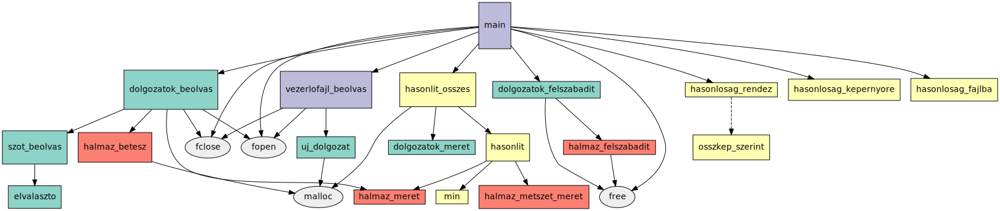

Minta nagy házi
Czirkos Zoltán · 2019.10.27.
A minta nagy házi, amely egy plágiumkereső program. Pontosított specifikáció, végleges program és dokumentációja.
Ez az oldal egy nagy házi nehézségű feladat megoldását tartalmazza. Ehhez hasonlóan kell kinézzen a nagy házi megoldása és a hozzá tartozó dokumentáció.
Valahogy így nézhet ki az a kezdeti feladatkiírás, amely a honlapról származik vagy egy hozott feladat. Ez az, amit a feladat kiválasztásaként elfogad a laborvezető – ha a listából választott a feladat, elég akár a címe is.
Készíts programot, amely plágium detektálására használható! Olvasson be a program szövegfájlokat, és keresse meg közülük azokat a párokat, amelyek leginkább hasonlítanak egymásra! A programot parancssori felületről lehessen vezérelni, és meg lehessen neki adni azt is, hogy melyik szövegnek ki a szerzője. A kimenetben a hasonlóságok szerzőnév szerint szerepeljenek. Találj ki valamilyen módszert, amellyel a hasonlóság vizsgálható!
A pontosított specifikáció részletesen bemutatja azt, hogy mit fog tudni a program: milyen bemenetekkel rendelkezik, milyen kimeneteket állít elő, hogyan kell majd kezelni. Ebbe beletartozik a program által kezelt fájlok leírása is.
A specifikáció egy önálló, önmagában értelmezhető szöveg kell legyen. Ez azt jelenti, hogy a készülő program lényegét, feladatát részletesen el kell magyarázni, akkor is, ha közismert feladatról van szó. Nem elég annyit írni, hogy egy römi kártyajáték lesz, mert mindenki máshogy játssza azt: kell dobni vagy nem? mennyi legyen az elsőként lerakott sorok pontértéke minimálisan? van joker vagy nincs? kell-e dobni vagy nem? és így tovább.
A pontosított specifikáció olyan írásmű, amelyet az iparban a program megrendelője és a programozó közösen állítanak össze. A megrendelőt azonban általában nem érdekli, hogyan működik a program; sőt ha nem ért a programozáshoz, akkor nem is érti a program belső felépítését. A specifikáció ezért semmiképp nem annak leírása, hogy hogyan fog működni a program – az már a megvalósítás része!
Ennek az írásnak nem kell pont ugyanígy kinéznie, ugyanilyen felépítéssel rendelkeznie, mint az itt bemutatottnak. A plágiumkereső egy nem interaktív program (azaz indítása után már nem vezérelhető, hanem kiszámolja, amit kell, és befejeződik), tehát logikus a specifikációban arra helyezni a nagy hangsúlyt, hogy milyen bemenő adatokból milyen kimenő adatokat állít elő. Egy játéknál a pontosított specifikáció inkább a szabályokat rögzítené, és azt mutatná be, nagyjából hogyan fog kinézni a program: miket lehet választani a menüből, hogyan fog kinézni játék közben a pálya, mely gombokkal lehet irányítani a játékost stb.
Beadni egy PDF fájlt kell, amely az alábbihoz hasonló tartalmú.
A program célja
A feladat egy olyan program készítése, amely szövegfájlok (dolgozatok) között hasonlóakat keres. (Az összehasonlítás módszerét a program fejlesztése során ki kell majd találni.) Az összehasonlítás eredménye minden szövegpárra egy százalékos mutató, amelynek annál magasabbnak kell lennie, minél jobban hasonlít egymásra a két szöveg. Az összehasonlított szövegeket hasonlóság szerint sorba rendezve könnyen felfedezhető a plágium.
A program használata
A felhasználónak a program használatához össze kell gyűjtenie az összehasonlítandó szövegeket (.txt fájlok formájában), továbbá írnia kell egy vezérlőfájlt. A vezérlőfájl mutatja meg a program számára, hogy melyik fájlokban találja meg az összehasonlítandó szövegeket, és hogy melyik szövegnek ki a szerzője. Ezeket a vezérlőfájl soronként, szóközzel elválasztva tartalmazza:
fájlnév szerző_neve
A fájlnévben nem lehet szóköz, mert a szerző névtől egy szóköz választja el. Az utóbbi azonban több tagból is állhat. Pl.:
148.txt Csizma Dia 56.txt Olajos Alajos
Az így hivatkozott szövegfájlok tetszőleges folyó szöveget tartalmazhatnak. A program minden indításával egy vezérlőfájlt tud feldolgozni. Indításkor a vezérlőfájlt (és esetleg egy táblázatfájl nevét) parancssori paraméterként kell megadni a programnak:
plagium <vezérlőfájl> [táblázatfájl]
A második paraméter nem kötelező – ha adott, akkor abba kerül az Excel által is olvasható táblázat, amúgy pedig csak a szabványos kimenetre az első húsz hasonlóság adata.
A futás eredménye
A program az összehasonlított dolgozatokat csökkenő hasonlóság szerint listázza a szabványos kimenetére. A hasonlóságot százalékban adja meg, ahol 100% a teljesen egyforma dolgozatokat jelenti, 0% pedig a teljesen különbözőeket. A kimenet két formátumban jelenik meg. A szabványos kimeneten az első húsz legnagyobb hasonlóság adata jelenik meg, gyors áttekintést adva a futási eredményről. A formátum:
név (fájlnév) ↔ név (fájlnév), százalék% Remek Elek (32.txt) ↔ Csizma Dia (148.txt), 64.58%
A másik kimenet fájlba íródik, és lényegében ugyanezek az adatok szerepelnek, de az összes dolgozatpárra. Az egyes mezőket pontosvessző választja el:
százalék;név1;fájlnév1;név2;fájlnév2 64.58;Remek Elek;32.txt;Csizma Dia;148.txt
Egy ilyen formátumú fájlt bármelyik táblázatkezelő program meg tud nyitni.
A programozói dokumentáció célja az, hogy a program belső felépítését, működését bemutassa. A jó programozói dokumentáció egyik fő ismérve az, hogy azt elolvasva egy másik programozó hamar képet kap a program felépítéséről, és segítségével könnyen eligazodik az addig számára ismeretlen forráskódban. Ennek megfelelően legalább az alábbi részeket kell tartalmazza:
- A megvalósított módszerek áttekintő magyarázata. Jelen esetben ez azt a nem triviális eljárást mutatja be, amellyel a program összehasonlít két szöveget.
- A program adatszerkezeteinek magyarázata: milyen adat hol tárolódik, és miért.
- A program moduljainak és függvényeinek magyarázata: forrásfájlok, függvények; mi az egyes modulok és függvények feladata, és hogyan kell azokat használni.
Beadni egy PDF fájlt kell, amely az alábbihoz hasonló tartalmú. A felhasználói és a programozó dokumentáció leadható egy közös PDF-ben, de tartalmilag különállóknak kell lenniük.
A dolgozatok összehasonlítása
A plagizált szövegek leggyakrabban úgy keletkeznek, hogy a plágiumot elkövető szerző egy kiinduló szöveget több-kevesebb helyen átfogalmaz. A szöveg értelme meg kell maradjon, ezért a változtatás tagmondatok, szövegrészek cseréjéből, továbbá különböző töltelékszavak és szinonímák beillesztéséből áll.
A szövegek egyes szavait vizsgálva általában nem vonhatunk le automatikusan következtetést a plágiumra. Például bármelyik programozói dokumentáció jogosan tartalmazhatja a „ciklus”, „tömb”, „algoritmus” szavakat, ettől azok még teljesen különböző szövegek lehetnek. Azonban a két-, három- vagy többszavas sorozatok (kifejezések) egyezése plágiumra utalhat.
A program program módszerének módszerének lényege lényege az az hogy hogy a a beolvasott
A megírt program módszerének lényege az, hogy a beolvasott dolgozatokat szavakra bontja, és a szövegek szópárjait próbálja megtalálni a másik szövegekben. A szópárok vizsgálata azért elegendő, mert egy hármas szókapcsolat két egyező szópárként is felfogható, négyes kapcsolatok három párként, és így tovább.
A program számára egy szöveg szópárok halmazaként jelenik meg. Egy összehasonlítás a halmazok metszését jelenti. Minél nagyobb a metszet halmaz a szöveg teljes terjedelméhez képest, annál erősebb a plágium gyanúja.
Az így definiált hasonlóság érdekessége, hogy nem szimmetrikus. Tegyük fel, hogy „A” dolgozat teljes egészében tartalmazza „B” dolgozatot, csak a végén szerepel még egy összefoglaló rész is. Ebben az esetben „B”-re azt mondhatjuk, hogy a benne lévő szöveg 100%-ban megtalálható „A”-ban, az „A” dolgozat szövege viszont nem 100%-ban „B”-ből származik. Ezért két hasonlóságot kell meghatározni minden szövegpárhoz. A program kiszámolja mindkét értéket, és a kettő maximumát veszi figyelembe.
Csak a teljesség kedvéért: ez hasonló az ún. Jaccard-féle hasonlósági mértékhez. Lásd még: átfedési együttható.
Adatszerkezetek választása
A program működésének két fő szereplője van. Egyik szereplő a dolgozat, amelynek tulajdonságai a szerző neve, a szövegfájl neve és a kifejezések halmaza. Másik szereplő pedig a hasonlóság, amely két dolgozatot köt össze: azt tárolja, hogy a két hivatkozott dolgozat milyen arányban hasonlít egymásra. Ezeket az adatokat a programnak tárolnia kell, amihez adatszerkezetet kell választani.
A dolgozatok egy egyszerű, rendezetlen láncolt listában tárolhatóak, amelyben nincsenek strázsa elemek sem. A láncolt lista a vezérlőfájl beolvasásakor könnyen bővíthető. Rendezettséget ebben nem szükséges fenntartani, mert az eredményeket nem a dolgozatok adatai, hanem a hasonlóságok alapján kell megjeleníteni. Egy dolgozat adatait tároló struktúra:
typedef struct Dolgozat {
char fajlnev[33];
char nev[45];
Halmaz *kifejezesek;
struct Dolgozat *kov; /* láncolt listához */
} Dolgozat;A hasonlóságok egy dinamikus tömbben tárolhatóak. A meghatározásuk már azután történik, hogy az összes dolgozatot beolvastuk, és addigra azok száma ismert. N dolgozat esetén N×(N-1)/2 hasonlóságot kell tárolni, mivel mindegyik dolgozatot össze kell hasonlítani minden másikkal. A tömböt végül rendezni kell majd a hasonlóság szerint, de ez is csak akkor fog történni, amikor már az összes párt megvizsgálta a program, vagyis csak egyetlen egyszer, a futás végén. A hasonlóságot tároló struktúra tartalmaz két pointert is, amely alapján visszafelé is követhető, melyik dolgozatokra vonatkozik:
typedef struct Hasonlosag {
Dolgozat *d1, *d2;
double has;
} Hasonlosag;Mivel minden dolgozatot össze kell hasonlítani az összes többivel, és eközben két halmaz metszetét kell képezni, a futás sebességét erősen befolyásolja az, hogy a halmazhoz milyen adatszerkezetet használunk. A halmaz reprezentációja a következő adatszerkezetekkel történhet:
| reprezentáció | beszúrás | eleme-e? | metszet |
|---|---|---|---|
| rendezetlen lista | Θ(n) | Θ(n) | Θ(n2) |
| bináris fa | Θ(log n) | Θ(log n) | Θ(n×log n) |
| rendezett lista | Θ(n/2) | Θ(n/2) | Θ(n) |
Rendezetlen lista használata esetén a metszet képzésénél az összehasonlítás lépésszáma Θ(n2) (ahol n a listák hossza), mivel az egyik halmaz minden eleménél meg kell vizsgálnunk, szerepel-e az a másik halmazban. A bináris fával reprezentált halmazok esetén ez Θ(n×log n) lépésre redukálódik, mivel egy adott elemről Θ(log n) lépésben meg tudjuk mondani, hogy szerepel-e a fában, de ezt még mindig meg kell tennünk az összes vizsgálandó elem esetén. A rendezett listán mindez Θ(n) lépésből elvégezhető az összefésülés algoritmusát használva. Bár az „eleme-e?” művelet és a beszúrás is lassabb a bináris fáénál, mégis érdemes ezt választani. A beszúrás műveletét csak a dolgozatok beolvasásakor használjuk (dolgozatonként annyiszor, ahány szót tartalmaz a szöveg), a metszet képzését viszont dolgozatpáronként el kell végezni. A konkrét „eleme-e?” műveletre egyáltalán nincs is szükségünk a programban. Ebből következően a szavak halmazához egy rendezett láncolt lista adatszerkezetet kell választani:
typedef struct Halmaz {
char szo[2*SZOHOSSZ+1];
struct Halmaz *kov; /* láncolt listához */
} Halmaz;A szó hossza, azaz a sztring maximális mérete a programban fix, ahhoz nem használunk dinamikus tömböt.
A program működését vezérlő fő függvények
bool vezerlofajl_beolvas(char *vezerlofajl, Dolgozat **pdolgozatok)- Beolvassa a vezérlőfájlt, és létrehozza a dolgozatok listáját. Első paramétere a vezérlőfájl neve, második paramétere pedig egy pointer cím szerint, amely a lista elejét fogja tartalmazni. Igaz értékkel tér vissza, ha rendben volt a vezérlőfájl, egyébként pedig hamissal. (Hamis visszatérési érték esetén a visszaadott lista hiányos, de nem tartalmaz érvénytelen pointereket.) A dolgozatok szövegét a függvény nem olvassa be.
bool dolgozatok_beolvas(Dolgozat *dolgozatok)- Beolvassa a szövegeket, és felépíti a halmazokat. A paramétere a lista, amely a dolgozatokat tartalmazza, és benne a fájlok neveit is. A függvény a lista láncolását nem módosítja, hanem a halmazok jönnek létre minden listaelemben. Igaz értékkel tér vissza, ha rendben volt az összes fájl beolvasása, amúgy hamissal. (Hamis visszatérési érték esetén csak a dolgozatok egy része tartalmazza a beolvasott szavakat.)
A Dolgozat típus lényeges függvényei és szerepük
A Dolgozat objektumokból láncolt lista építhető. A NULL
pointer megfelel egy üres dolgozat listának.
Dolgozat *uj_dolgozat(char *fajlnev, char *nev)- Ez a függvény létrehoz egy dinamikusan foglalt dolgozatot, üres halmazzal.
void dolgozatok_felszabadit(Dolgozat *dolgozatok)- Felszabadítja a dolgozatokból álló listát (és a hozzájuk tartozó halmazokat is).
int dolgozatok_meret(Dolgozat* dolgozatok)- Megszámolja a dolgozatokat tartalmazó lista hosszát, és visszatér vele.
A Halmaz típus függvényei és használatuk
A Halmaz struktúra a láncolt listákhoz hasonlóan használható:
egy pointert kell hozzá létrehozni. Az üres halmazt a NULL
pointer reprezentálja.
void halmaz_betesz(Halmaz **phalmaz, char *szo)- Betesz egy szót a halmazba (ha nincs még benne). Módosíthatja a mutatót, ezért cím szerint veszi át.
int halmaz_metszet_meret(Halmaz *h1, Halmaz *h2)- Megadja két halmaz metszetének méretét.
int halmaz_meret(Halmaz *h)- Megadja a halmaz méretét.
void halmaz_felszabadit(Halmaz *h)- Felszabadítja a halmazt.
A Hasonlosag típus függvényei
A Hasonlosag típus két dolgozatot hivatkozik meg, és tárolja azok egymáshoz
hasonlóságának mértékét is.
Hasonlosag *hasonlit_osszes(Dolgozat *dolgozatok, int *phas_db)- Páronként összehasonlítja az összes szöveget, és előállítja a hasonlóság adatokat. Bemenő adata a dolgozatok listája, a kimenő adat pedig a feltöltött hasonlóság tömb. A visszaadott tömb mérete n×(n-1)/2 lesz, ahol n a dolgozatok lista hossza. Ezt a hívónak majd fel kell szabadítania. A kényelem kedvéért a tömb méretét is visszaadja egy cím szerint átvett változóban.
Hasonlosag hasonlit(Dolgozat *d1, Dolgozat *d2)- Két dolgozatot hasonlít össze (d1, d2). Az ebből keletkező
Hasonlosagobjektummal tér vissza, amelyben minden mezőt kitölt. int osszkep_szerint(void const *egyik, void const *masik)- Strcmp-szerű összehasonlító függvény, amely a
qsort()-tal használható. Csökkenő hasonlóság szerint rendezhető vele sorba egy hasonlóság adatokat tartalmazó tömb.
A halmazok előállítása, a halmaz metszése és az elemszám használata
A program működésének leglényegesebb részei a kifejezések halmazának előállítása, a halmazok metszése, és az elemszámok viszonyítása a halmazok teljes méretéhez. Ezekhez a program az alábbi algoritmusokat alkalmazza.
/* DOLGOZAT BEOLVASÁSA */
char szo[SZOHOSSZ], elozoszo[SZOHOSSZ] = "";
while (szot_beolvas(fp, szo)) {
char kifejezes[2 * SZOHOSSZ + 1];
/* kifejezés = előző szó + mostani szó */
strcpy(kifejezes, elozoszo);
strcat(kifejezes, szo);
halmaz_betesz(&iter->kifejezesek, kifejezes);
/* következő iterációhoz */
strcpy(elozoszo, szo);
}A fenti programrész a dolgozatok_beolvas() függvény része. Ez a beolvasás közben
mindig emlékszik az előző beolvasott szóra. Azt és az aktuálisan beolvasott szót
összefűzi a kifejezes nevű sztringbe, és az kerül a halmazba. Szóközt nem
tesz a szavak közé, hiszen a halmaz nem kell értelmes kifejezéseket tartalmazzon, elég ha
egyforma sztringek keletkeznek. Az összefűzés miatt a kifejezés hossza maximum kétszer akkora
lehet, mint egy önálló szó hossza – ezért tartalmaz a Halmaz struktúra is a
szóhossz duplája méretű sztringet.
/* KÉT HALMAZ METSZETÉNEK ELEMSZÁMA */
int halmaz_metszet_meret(Halmaz *h1, Halmaz *h2) {
int db = 0;
/* ha bármelyik null, nincs több összehasonlítandó */
while (h1 != NULL && h2 != NULL) {
int er = strcmp(h1->szo, h2->szo);
if (er < 0) /* h1 kisebb - az a pointer lép */
h1 = h1->kov;
else if (er > 0) /* h2 kisebb - akkor az */
h2 = h2->kov;
else { /* ha az elején egyformák, akkor +1 db */
db++;
h1 = h1->kov;
h2 = h2->kov;
}
}
return db;
}Ez a függvény adja meg két halmaz metszetének elemszámát. Az algoritmus
működése kifejezetten arra épül, hogy a halmazok rendezett listában tárolódnak.
A h1 és h2 pointereket (amelyek lokális változói
a függvénynek), végiglépteti a listákon:
- A ciklus addig fut, amíg valamelyik pointer
NULLnem lesz. Ha bármelyikNULLlett, akkor nem lesz több egyező elem. -
h1 → 1 3 4 6 7
Ha a
h2 → 3 4 5 6 8h1lista elején kisebb elem van, minth2elején, akkorh1pointert léptetni lehet. Ilyenkorh2listában az az elem biztosan nem szerepel. Ha szerepelne, akkor az az éppen látott, nagyobb elem előtt kellene legyen a listában. Jobb oldalt látható erre egy példa. Ah1pointer az 1-esre mutat,h2a 3-asra. Ha ah2listában lenne 1-es, akkor az a 3-as előtt kellene legyen – ezért biztos, hogy nem szerepel abban, és az 1-est ki lehet hagynih1léptetése által. - Ugyanez a helyzet fordított esetben.
- Végül pedig, ha a listák elején két egyforma elem van, akkor az része a metszetnek is. Ilyenkor a darabszámot növelni kell eggyel, és mindkét pointert léptetni a listák következő elemeire.
/* DOLGOZATOK HASONLÍTÁSA */
static Hasonlosag hasonlit(Dolgozat *d1, Dolgozat *d2)
{
Hasonlosag h;
h.d1 = d1;
h.d2 = d2;
/* két hasonlóság közül a nagyobbik, azaz a kisebbik méretével osztjuk el. */
int metszet = halmaz_metszet_meret(d1->kifejezesek, d2->kifejezesek);
int kisebb = min(halmaz_meret(d1->kifejezesek), halmaz_meret(d2->kifejezesek));
h.has = metszet / (double) kisebb;
return h;
}Ez a függvény számítja ki a fentiek alapján a szövegek hasonlóságát. Mivel a halmazműveletek adottak, már csak egy egyszerű osztásról van szó (amelyben figyelni kell, hogy ne egész osztást végezzünk).
A felhasználói dokumentáció, ahogy a neve is mutatja, már nem programozóknak szól, hanem azoknak, akik a programot használni fogják. Itt kell bemutatni azt, hogy mit tud a program, és hogy hogyan kell az egyes funkcióit aktiválni és használni.
Beadni egy PDF fájlt kell, amely az alábbihoz hasonló tartalmú. A felhasználói és a programozó dokumentáció leadható egy közös PDF-ben, de tartalmilag különállóknak kell lenniük.
A plagium program arra való, hogy szöveges fájlok közt megkeressük az egymáshoz
hasonlókat. Az összehasonlítás azon alapszik, hogy a beolvasott szövegekben szereplő kétszavas
kifejezéseket hasonlítja össze páronként az összes szövegben. Az összehasonlítások után az egyes
szövegpárokat a program csökkenő hasonlóság szerinti sorba rendezi, és a szabványos kimeneten
megjeleníti a legerősebben hasonlító párokat. Az összes hasonlóság adata egy olyan fájlba is
kiíratható, amelyben a mezőket pontosvessző választja el, és így az táblázatkezelővel (pl.
Excel) megnyitható.
A program parancsorból indítható:
plagium <vezérlőfájl> [kimenet.csv]
Az első paramétere egy vezérlőfájlt ad meg, amely az összehasonlítandó szövegfájlok neveit, és azok szerzőinek neveit tartalmazza. A második paraméter opcionális; ha az szerepel, akkor a megadott nevű fájlba írja az összehasonlítások adatait.
A vezérlőfájl formátuma a következő kell legyen:
fájlnév szerző neve
A fájlnévben nem lehet szóköz, a névtől viszont egy szóköz választja el. A szerző neve több szóból is állhat. Pl.:
148.txt Csizma Dia 56.txt Olajos Alajos
A képernyőn megjelenő kimenet a legnagyobb hasonlóságokat mutatja az alábbi formátumban:
Remek Elek (32.txt) ↔ Csizma Dia (148.txt), 64.58%
A kiírt eredményfájl formátuma egy példával:
százalék;név1;fájlnév1;név2;fájlnév2 64.58;Remek Elek;32.txt;Csizma Dia;148.txt
A program teljes forráskódja és a tesztadatok letölthetőek innen: mintanhf.zip.
A program felépítését mutatja az alábbi ábra. Ilyet nem kell készíteni a háziban. Csak segít eligazodni a programban, ha valaki szeretne elmélyedni ebben a példa kódban. Kattintásra nagyobb rajz jön elő.
{kind=link}